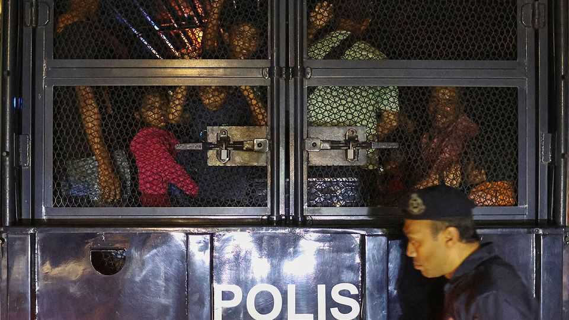

Rohingya refugees from Myanmar are living in fear in Malaysia
Their welcome has worn thin

Aug 13th 2026
“I DON’T WANT to go out any more. I stay home most of the time, I want to leave Malaysia so badly.” So says Nur Sadek, a Rohingya refugee and community organiser who arrived in the country from Myanmar nearly five years ago. Mr Sadek shares messages from strangers threatening him with violence, some naming places where he can be found. One stranger sent him a video showing a rifle being fired.
Life in Malaysia has never been good for Rohingyas—a Muslim minority viciously persecuted in Myanmar who have long sought refuge elsewhere in South-East Asia, often arriving in rickety boats. The UN officially counts more than 100,000 of them in the country, though the true number is doubtless higher. They do not live in refugee camps, but nor do they enjoy many rights. They are not allowed to seek formal employment and their children cannot study in Malaysian schools.
Recently matters have been greatly worsened by a hate campaign that has gained strength on Malaysian social media. In May viral posts accused refugees of improper disposal of the remains of animals slaughtered during the Muslim festival of Eid al-Adha. In June a post falsely claimed that more than 2m babies had been born to couples combining a Rohingya and a Malay (feeding on old worries that the foreigners are snapping up local women and having babies who become citizens). Another post pictured a fictitious (AI-generated) “President of Rohingya Malaysia”, supposedly demanding that an entire town be set aside for Rohingyas to live in. The Malaysians who shared that one included the daughter of the deputy prime minister.
Ten years ago Malaysians were more welcoming. When large numbers of Rohingyas began fleeing military clearances in Rakhine state in 2017 (which the UN has described as a “textbook example of ethnic cleansing”), many Malaysians were willing to stick up for them. These days Malaysians are feeling squeezed by rising living costs and economic mismanagement. Refugees make handy scapegoats.
The online vitriol has real-world impacts. In June and July at least nine informal schools teaching Rohingya children in Malaysia were closed, either by authorities (for being unlicensed) or by staff who had grown concerned about their safety; one teacher says he has told children not to walk in groups. Malaysia’s government now routinely turns away or detains Rohingyas’ boats. The police recently held over 100 Rohingya refugees who had travelled to UN offices in Kuala Lumpur, Malaysia’s capital, following a reported eviction. On July 29th Malaysia announced plans to send some 5,000 Rohingya refugees back to Myanmar, where their lives may be at risk. Anand Raj, president of the Malaysian bar, warns that such deportations are “neither humane nor a viable option”.
Rohingyas will doubtless keep trying to reach Malaysia, no matter how bad things get there. Some 6,500 Rohingyas are known to have attempted the voyage by boat last year, up from 4,300 in 2023 and 2,400 back in 2020. Says one refugee in Malaysia: “If we didn’t flee we would have been killed.” ■
For exclusive coverage of Asian politics, economics and security, sign up to Asia Bulletin, our weekly subscriber-only newsletter.